For Audubon Louisiana (part of the National Audubon Society), I designed and formatted a 92-page scientific report on bird species in the Gulf of Mexico affected by the BP Oil Spill and projects to restore the health of birds and habitats in the Gulf Coast region.

- Client
- Audubon Louisiana
- Agency
- Deep Fried Advertising
- Years Active
- 2018-2019
- Role
- Lead Design
- Work
- Report, Brochure
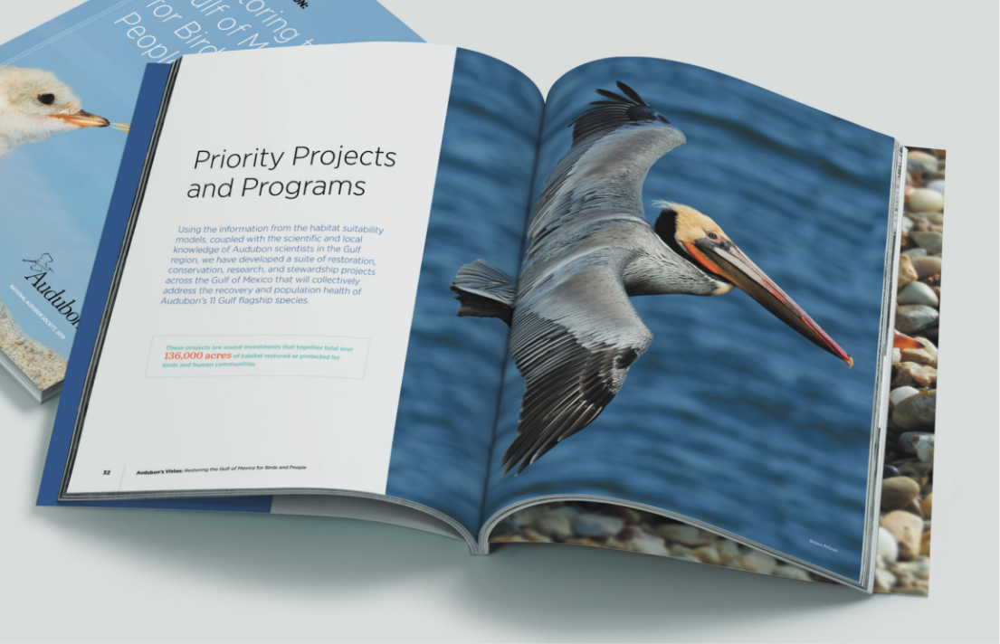
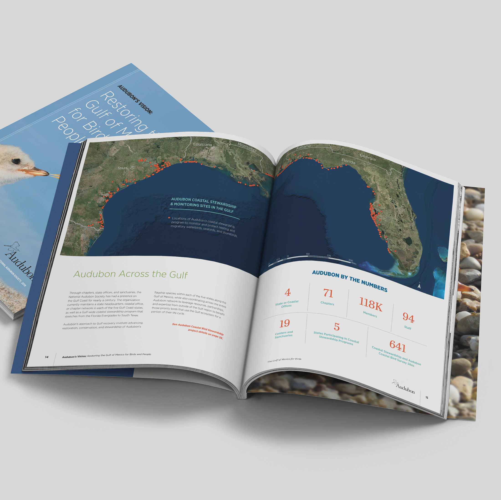
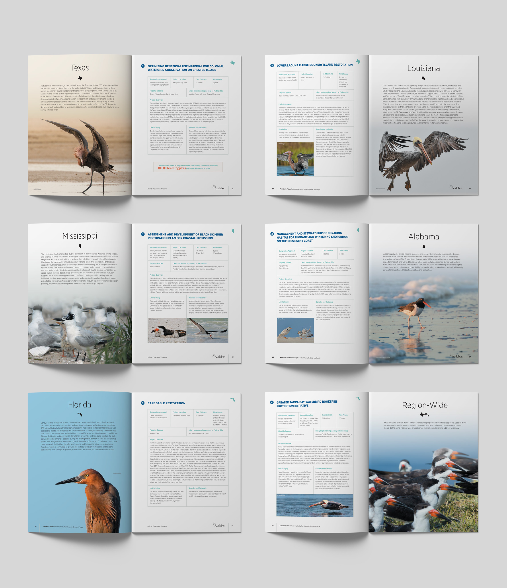
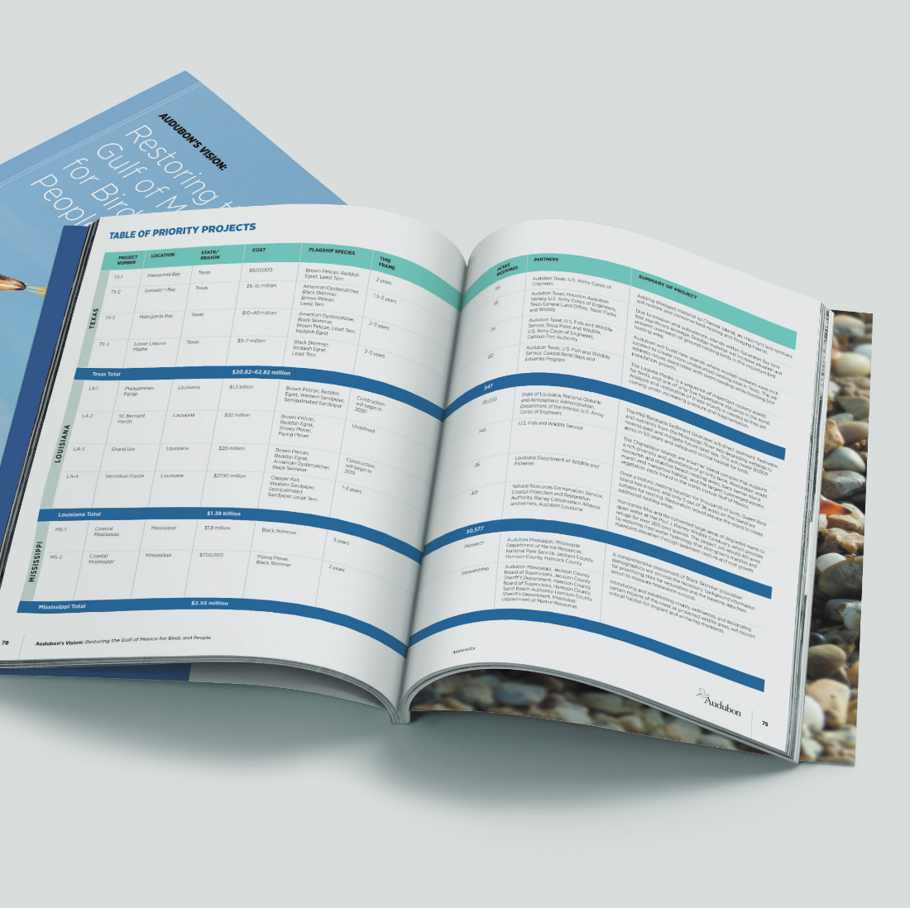

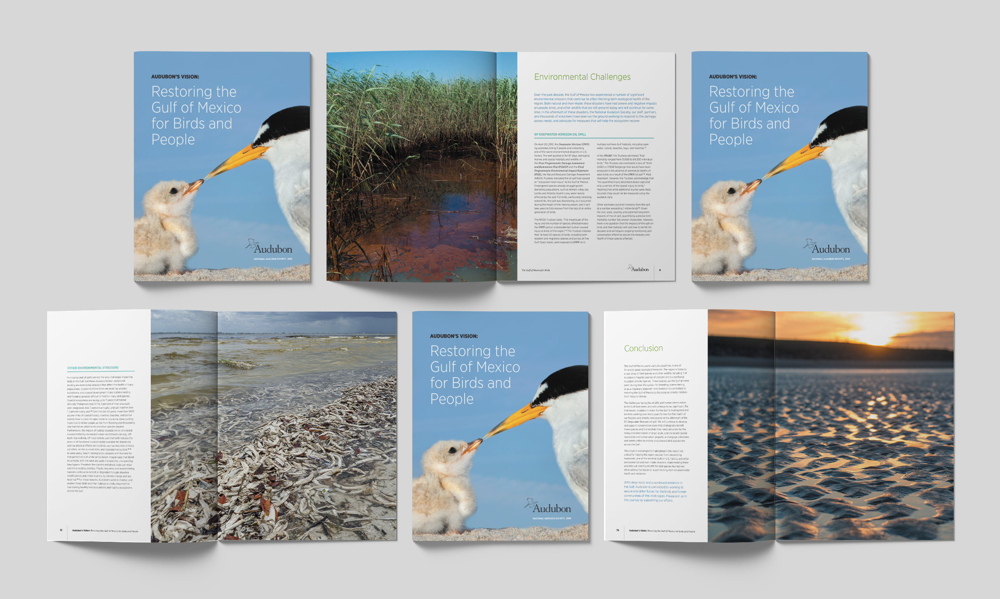
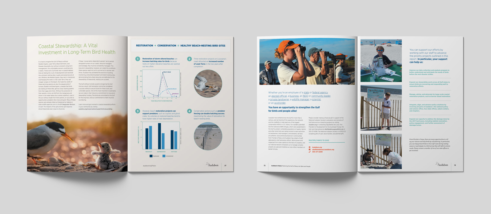
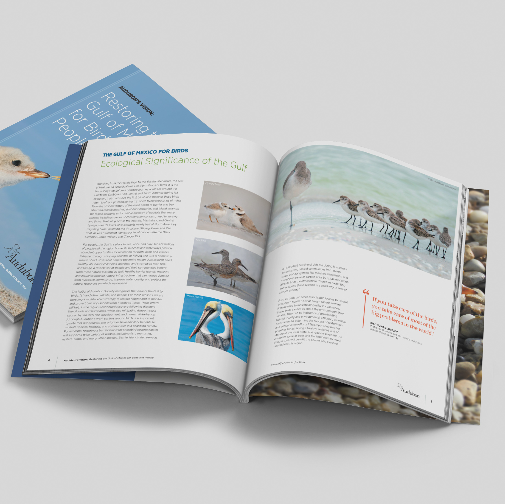
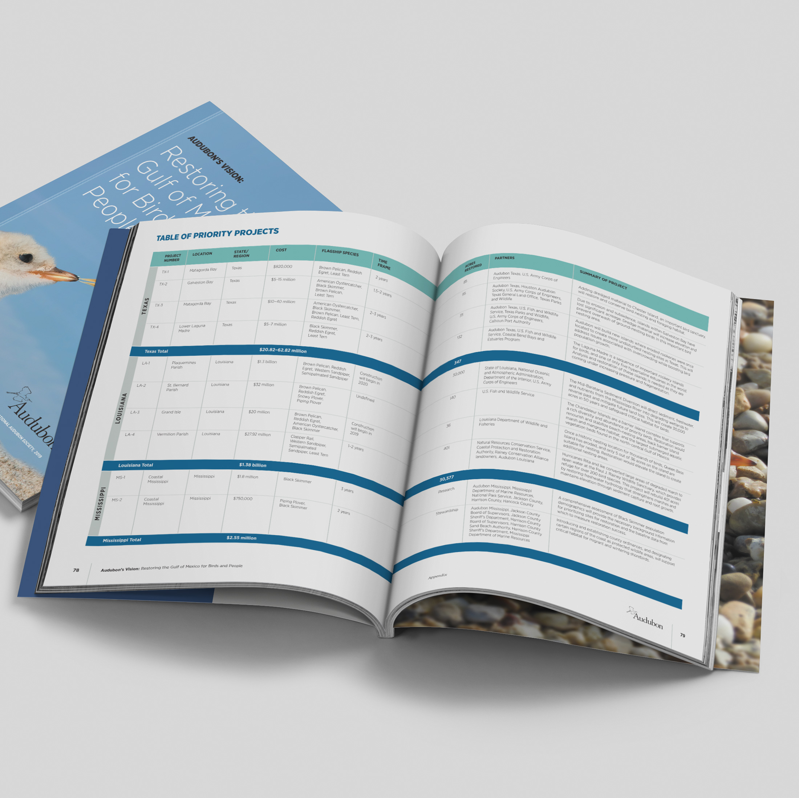
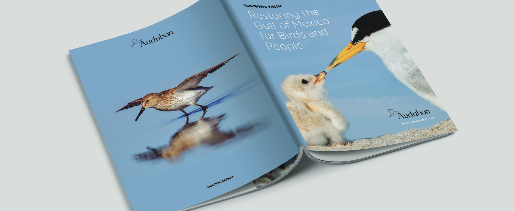
A condensed, summarized version of the report was designed as a double-gatefold brochure.
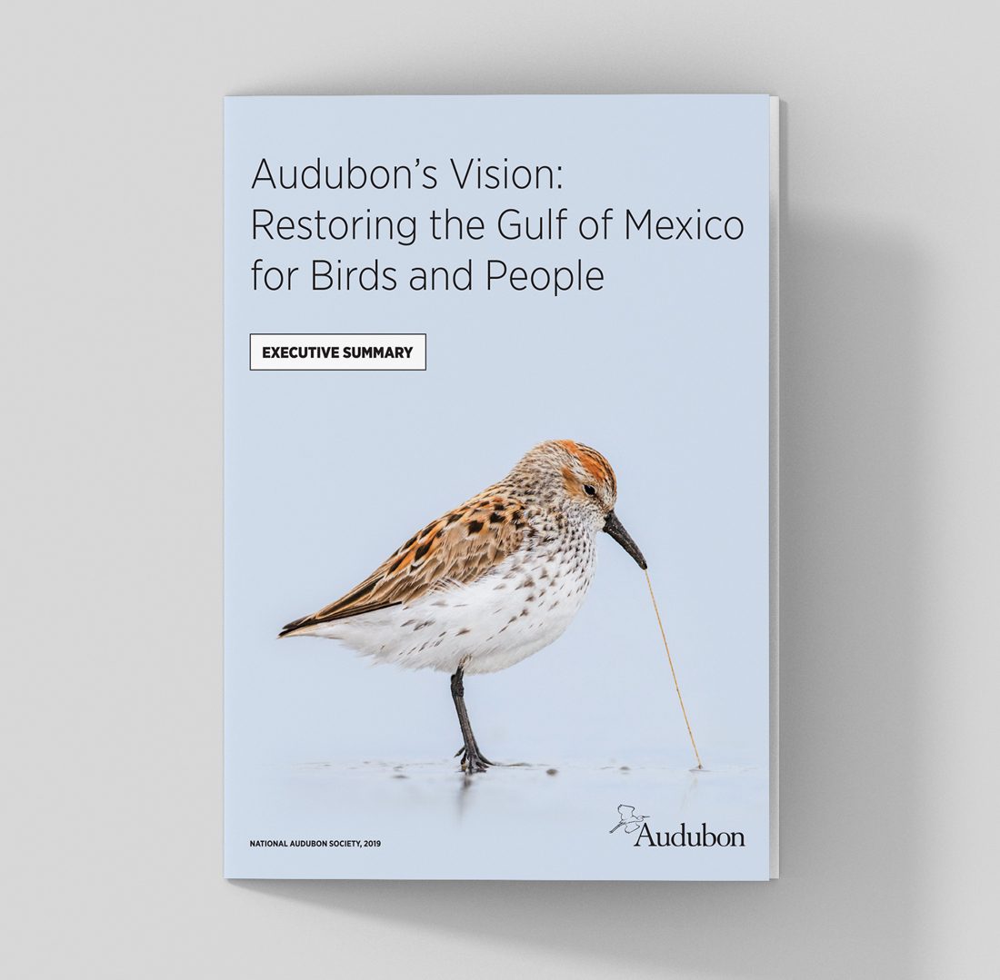

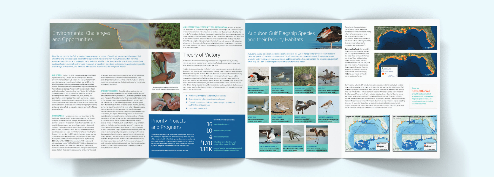
The full report and executive summary were printed as well as posted online on the official Audubon website.